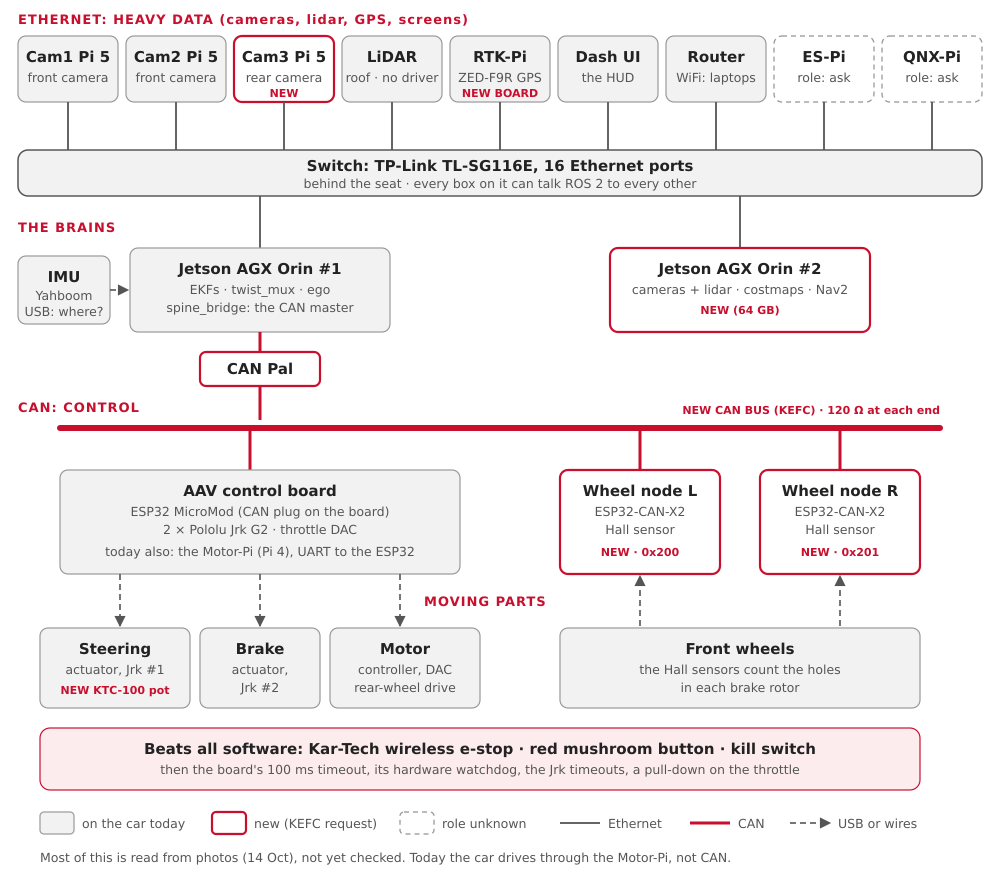
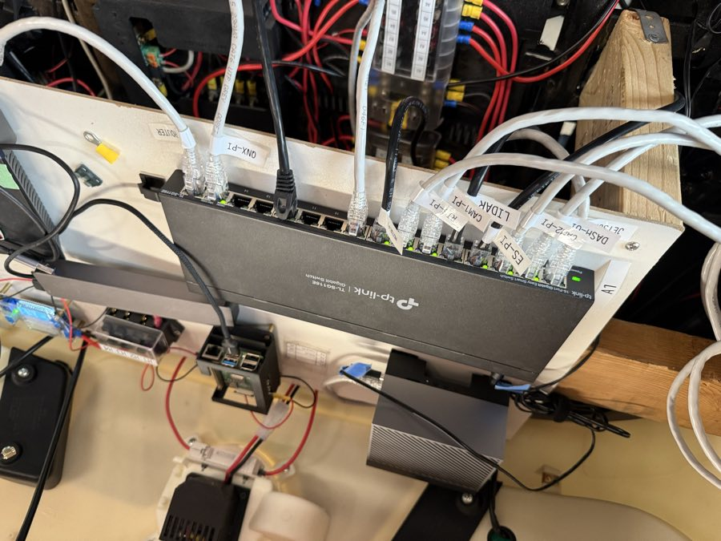
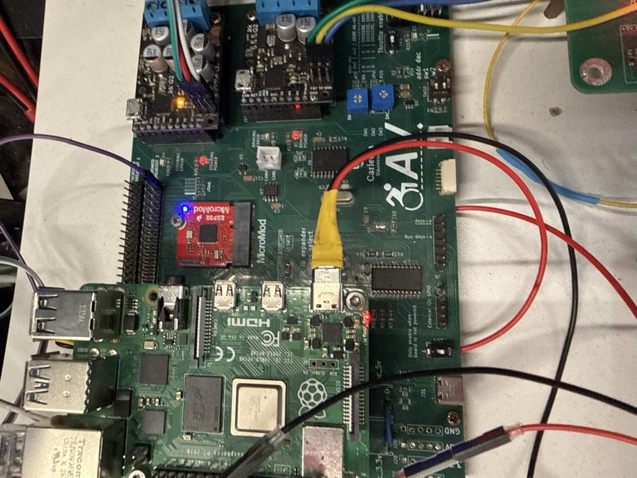
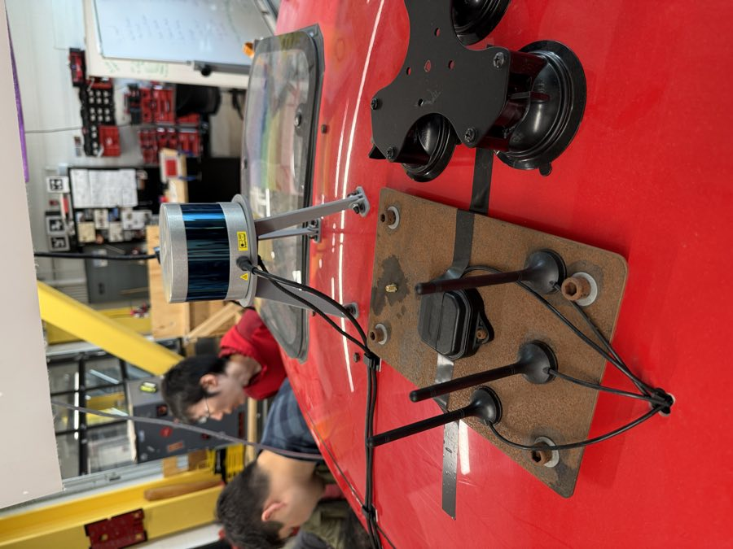

Every computer, board, sensor and motor on the car: what it does, and which wire it talks on. Today, and after the KEFC changes.
You'll learn:
- the four kinds of wire on the car: Ethernet, CAN, USB and UART;
- what each box does, in one line;
- what changes when the KEFC request is built.
Mostly from photos
Much of this page comes from Ben's photos of 14 October (Car photos). A box marked photos is "from the photos, not yet checked". The audit on Friday 16 October checks it.
None of our code has run on the car yet
The car still runs the 2025-26 team's code, on ROS 2 Humble. Our code (Jazzy) runs in the turtle, Gazebo and bench mode only.
The picture

Read it top to bottom:
| Layer | What travels there |
|---|---|
| Ethernet | heavy data: camera pictures, lidar points, GPS, the screens |
| The brains | two Jetson Orins: one drives, one sees and plans |
| CAN | small, urgent control messages: steer, brake, speed |
| Moving parts | the actuators and the motor, wired to the control board |
| Safety | the buttons that stop the car whatever the software does |
The four kinds of wire
| Wire | What it is | Good for | On the car |
|---|---|---|---|
| Ethernet | the network cable a laptop uses | lots of data, many computers | the switch behind the seat |
| CAN | two twisted wires, built for cars | short messages that must arrive on time | new: the Orin, the control board, two wheel nodes |
| USB | the plug on any computer | one device into one computer | the IMU; the GPS board into its Pi |
| UART | a simple serial line between two chips | one board talking to one board | today: the Motor-Pi to the ESP32 |
The Glossary explains each word.
The computers
| Box | Does | Wire | Today | After KEFC |
|---|---|---|---|---|
| Jetson AGX Orin #1 | the main computer: in our plan, the EKFs, twist_mux, ego | Ethernet | runs the 2025-26 code, on Humble | keeps control; becomes the CAN master |
| Jetson AGX Orin #2 (64 GB) | cameras, lidar, costmaps, Nav2 planning | Ethernet | not there | new |
| Motor-Pi (Raspberry Pi 4) | turns ego's commands into UART frames for the ESP32 | Ethernet, UART | drives the car | kept until CAN is proven, then retired |
| Cam1-Pi, Cam2-Pi (Pi 5) | the two front cameras, at the windscreen, each on a ribbon cable (photos) | Ethernet | there | the same |
| Cam3-Pi (Pi 5) | the rear camera (photos: a camera is fitted at the back; is it wired?) | Ethernet | maybe | new |
| RTK-Pi (Pi, on the ceiling panel) | reads the GPS board over USB (photos) | Ethernet, USB | there | the same, with RTK corrections |
| Dash-UI | the in-car screen, the HUD (photos) | Ethernet | there | the same |
| ES-Pi | unknown: an e-stop Pi? (photos: a port label only) | Ethernet | ? | not in the KEFC picture |
| QNX-Pi | probably the 2025-26 QNX layer, now replaced by twist_mux (photos: a port label only) | Ethernet | ? | not in the KEFC picture |
The network boxes
| Box | Does | Seen |
|---|---|---|
| TP-Link TL-SG116E switch, 16 ports | joins every Ethernet box | photos: its ports are labelled |
| Linksys EA3500 router | the car's WiFi, so laptops can join | photos |
| CAN Pal | a CAN transceiver on Orin #1's 40-pin header | new (KEFC) |

The boards
| Box | Does | Wire | Today | After KEFC |
|---|---|---|---|---|
| AAV control board | carries the ESP32, two Jrk G2s and the throttle DAC | UART today, CAN after | runs the 2025-26 firmware | becomes the CAN node that steers, brakes and drives |
| ESP32 MicroMod | the microcontroller on that board | 2025-26 C++ firmware, no command timeout | new Rust firmware: brake after 100 ms of silence, watchdog, speed loop (not written yet for the ESP32) | |
| Wheel encoder (Pico 2 + W5500) | counts wheel spokes, sends them over UDP to the Motor-Pi | Ethernet | runs today | replaced by the wheel nodes |
| Wheel node L, R (ESP32-CAN-X2) | count Hall-sensor pulses from the front brake-rotor holes; wheel speed on CAN | CAN (0x200 L, 0x201 R, 100 Hz) | not there | new |
| ZED-F9R GPS board (SparkFun) | GPS position, to a Pi over USB-C | USB | fitted; its antenna lead is held by tape (photos) | a new board, same chip, screw-on antenna, RTK |

The board already has a white CAN plug, labelled CANH / CANL (photos). Is its transceiver chip (U7) fitted? The audit checks.
The sensors
| Sensor | Measures | Wire | In our code |
|---|---|---|---|
| IMU (Yahboom) | turn rate and acceleration | USB, to which computer? | aav_imu_yahboom |
| GPS (u-blox ZED-F9R) | latitude and longitude | USB to the RTK-Pi | ublox_gps (the default) |
| Wheel speed | how fast the wheels turn | CAN, straight to the Orin, from an Arduino (Ben, 23 Oct; was UDP to the Motor-Pi) | spine_bridge role:=sensors (was encoder_udp) |
| Lidar, on the roof (photos) | 3D points around the car | Ethernet | no driver yet; model unknown (Q22) |
| Cameras | pictures | ribbon cable into a Pi 5, then Ethernet | usb_cam, which expects a USB camera: a mismatch to sort out (Q22) |
| TI radar | points ahead of the car | USB | ti_ros2_driver; not seen in the photos |
| Battery monitor (Victron) | battery voltage and charge | USB (VE.Direct cable) | battery_monitor |
| Steering position (KTC-100 pot) | where the front wheels point | wire, into the steering Jrk | new: the board reads it from the Jrk |

The moving parts
| Part | Does | Driven by |
|---|---|---|
| Steering actuator | turns the front wheels | Jrk G2 #1 (I2C address 0x05) |
| Brake actuator | presses the brake | Jrk G2 #2 (I2C 0x04) |
| Throttle DAC | a voltage that sets the motor's power | the ESP32 (I2C 0x0C) |
| Motor controller | powers the rear-wheel-drive motor (photos: silver finned box) | the DAC's voltage |
| Pololu Jrk G2 | a small motor driver with feedback: "go to position X" | the ESP32, over I2C |
Power and safety
| Part | Does | Seen |
|---|---|---|
| Kar-Tech wireless e-stop | a remote stop; beats all software | photos: "ROS ON/OFF" written beside it |
| Red mushroom e-stop button | stops the car on its own wiring | photos: on the left frame tube |
| Kill switch | cuts the drive | KEFC request |
| RC transmitter and receiver (FlySky) | a person can take over by radio | firmware: iBUS on the ESP32 |
| E-stop board (TR, ES lights), 8 relays | the e-stop's trigger and status | photos |
| Battery box, fuse blocks, 12 V → 5 V converters | power for everything | photos: one converter at 3.5 A (is it enough for a Pi 5?) |
Today vs after the KEFC changes
| Today | After KEFC | |
|---|---|---|
| Command path | Orin → Ethernet → Motor-Pi → UART → ESP32 | Orin #1 → CAN → ESP32 control board |
| If the computer freezes | the last throttle stays on: no timeout | the board brakes after 100 ms (DBC v0.2.0, the CAN plan) |
| Wheel speed | Pico 2 → UDP → Motor-Pi | two wheel nodes → CAN, 100 Hz |
| Steering position | not measured | KTC-100 pot through the Jrk |
| GPS | ZED-F9R, taped antenna lead | new board, screw-on antenna, RTK |
| Perception and Nav2 | on Orin #1 (in our plan) | on Orin #2 |
The rollout, from the KEFC request: write the DBC first; test on the bench with a CANable
and candump; keep the Motor-Pi path until CAN is proven; never run both at once.
Details: CAN plan.
Try it
pixi run bench # the car's software, with stand-ins for every box above
pixi run bench-check # start it and check the whole graph (2 min)
pixi run view # the car's 3D model and its sensor frames, in RVizOn the car's network, once it runs Jazzy: pixi run doctor says whether your laptop can
see the car.
Where this lives in the code
| What | Where |
|---|---|
| Which program runs on which computer | ros/bringup/aav_bringup/config/machines/ (orin, motor_pi, laptop, all) |
| Where each sensor sits on the car | ros/bringup/aav_description/config/vehicle.yaml |
| Today's car | ros/can_bridge/aav_legacy, firmware/legacy/ |
| The CAN car | ros/can_bridge/aav_spine, firmware/can/aav.dbc, firmware/spine/ |
| The sensor drivers | ros/sources/ |
Next: A command's journey follows one joystick push through these boxes.